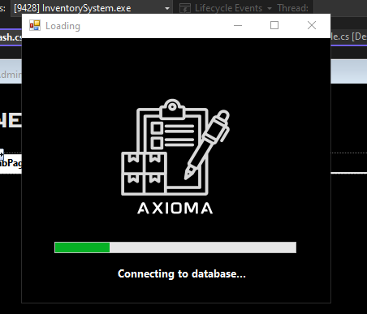

— PROJECT FOUR
A comprehensive inventory management system designed for efficient stock tracking and business operations.

This inventory management system provides comprehensive stock tracking, automated reporting, and user-friendly interfaces for businesses to efficiently manage their inventory. The system features real-time updates, barcode integration, and advanced analytics to optimize inventory control and reduce operational costs.
Real-time stock monitoring with automated alerts for low inventory levels and reorder points.
Comprehensive reporting and analytics dashboard for sales trends and inventory performance.
Role-based access control with secure user authentication and permission management.